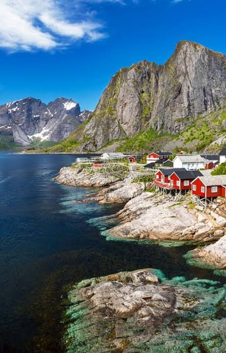
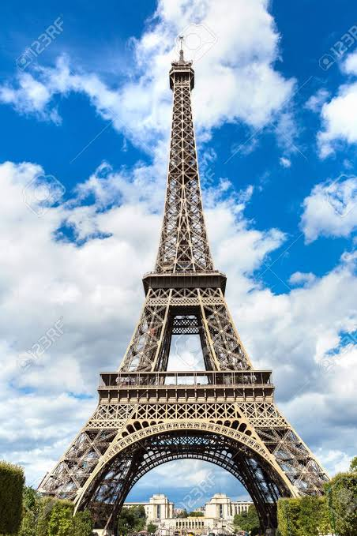
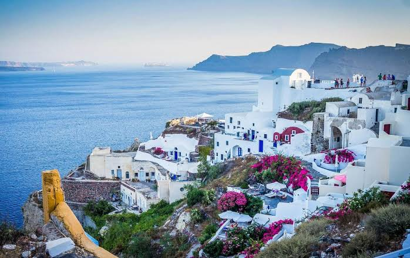
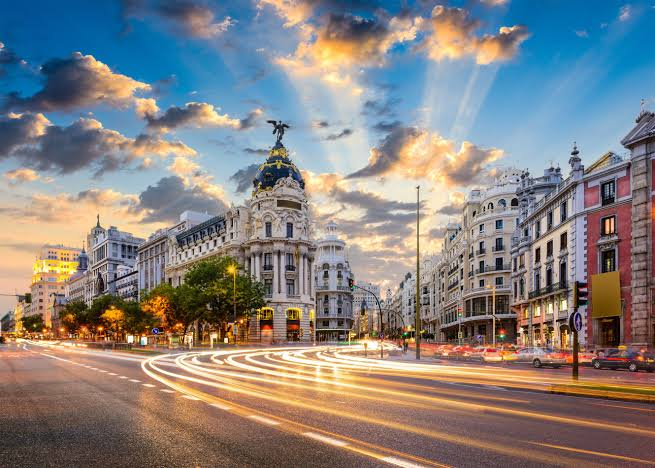

Destinos
Noruega
Con sus infinitas cascadas y sus largos fiordos, Noruega se considera uno de los mejores destinos. Un inmenso país de naturaleza abrumadora que hará las delicias de los amantes de lo salvaje, del senderismo y de los deportes de aventura. También aquellos que buscan paz, tranquilidad y pequeños pueblos de casitas adorables. Disfruta Noruega en cualquier estación, Noruega es inolvidable.
Paris, Francia
Es difícil decidir que es más importante en la capital francesa; si sus lugares de interés histórico y artístico o su arte gastronómico y restaurantes. Entre los primeros se distinguen el Louvre, museo que guarda la Gioconda, la Venus de Milo y otros tesoros del arte universal. París está entre las primeras 10 ciudades más turísticas del mundo. Solo la Torre Eiffel atrae aprocimademente mas de 7 millones de personas todos los años. Su gastronomía es famosa y en ella odrás degustar unos escargots, un foie gras o un pot-au-feu, entre otros.
Grecia
Grecia es uno de esos destinos que tienen de todo: historia, relax, cultura, tradición, buena comida, buen tiempo, buena gente. Si quieres que tus vacaciones sean completas, Grecia es una gran opción. Sencillamente, lo tiene todo. No es de extrañar que sea uno de los 20 mejores destinos a los que viajar, es uno de los lugares mas recomendado para pasar unas excelentes vacaciones con la compañia de tu familia, pareja o amigos.
Nueva Zelanda
Nueva Zelanda es uno de los países geográficamente más aislados del mundo y su fauna endémica sorprenderá a los observadores de la biodiversidad. Wellington, su capital, destaca por su activa vida nocturna y rica cultura. En el pueblo de Whakatane podrás visitar el Whakaari, un volcán marino en actividad. Este archipiélago oceánico ha crecido como destino turístico por sus volcanes, edénicas playas y ciudades con alto estándar de vida. Auckland es su ciudad con más habitantes y con bonitas playas, costas selváticas y bahías encantadoras.

Madrid, España
¿Por qué no aprovechar para viajar por España? Un país que está repleto de lugares con encanto, de pueblos con historia, de monumentos y paisajes declarados Patrimonio de la Humanidad por la Unesco. Por no hablar de la gastronomía española, ¡a ver dónde vas a comer mejor que en casa!. La capital española es una de las ciudades con mejor calidad de vida en el mundo. Su arquitectura tradicional sobresale en la Plaza Mayor, la Puerta de Alcalá, la Fuente Cibeles y la Estación de Atocha. En cuanto a sus construcciones modernas, las Cuatro Torres y la Puerta de Europa, son los primeros rascacielos inclinados del mundo.
